Feito em Portugal
Portugal tem uma longa tradição de criar produtos com materiais simples e muito cuidado. A cerâmica, a talha, a porcelana, o couro, a cortiça e os produtos do mar são exemplos de coisas que Portugal produz e leva para outros países.
Hoje vamos conhecer alguns destes produtos e falar sobre o que fazemos com eles: na mesa, na moda e também nas casas e nos jardins.
Sete coisas que Portugal faz bem
Leia o texto com atenção. Passe o rato pelas imagens pequenas para mudar a imagem principal. Depois, escolha a continuação que faz sentido.
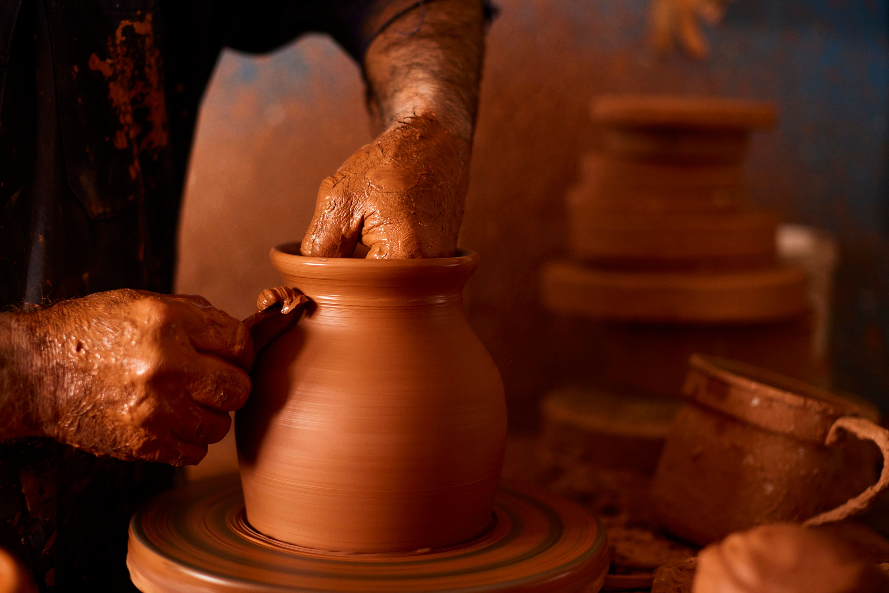
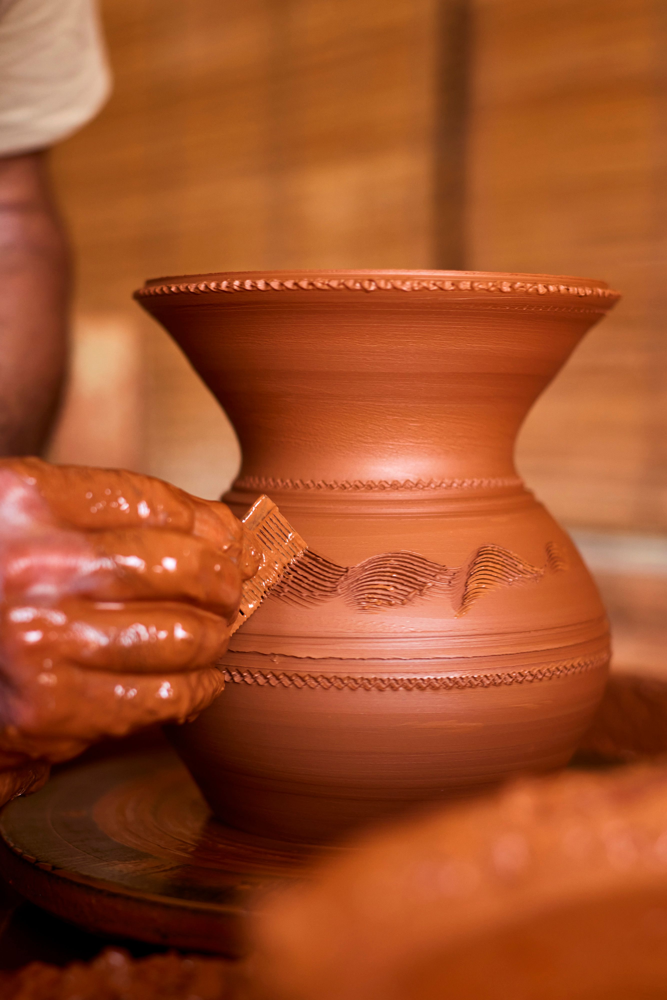
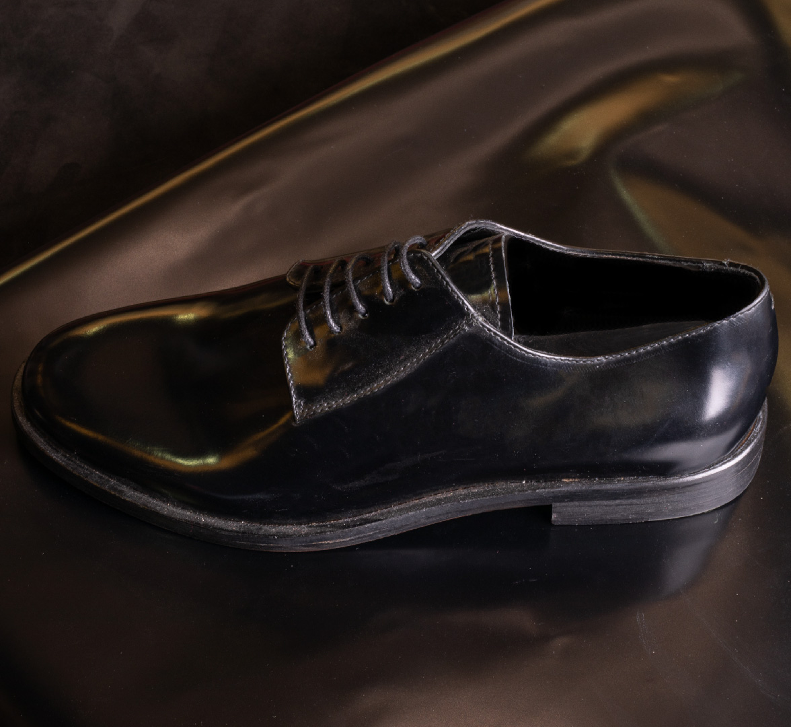
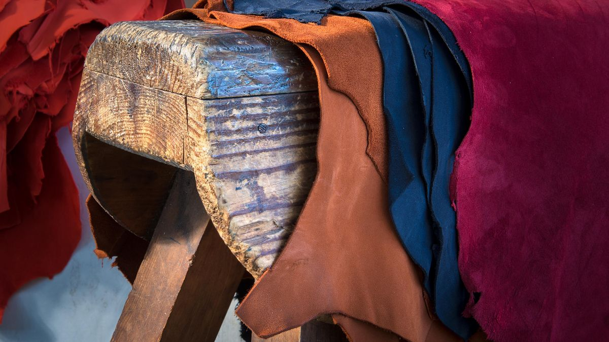
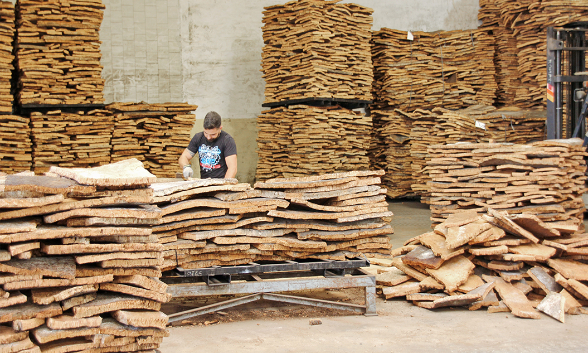
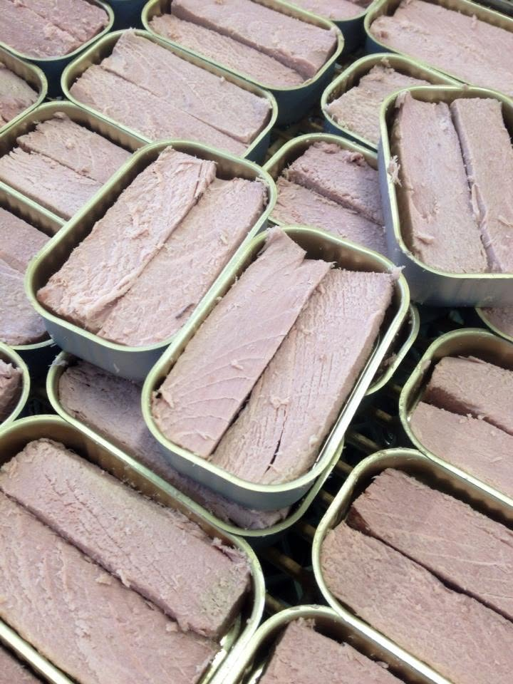
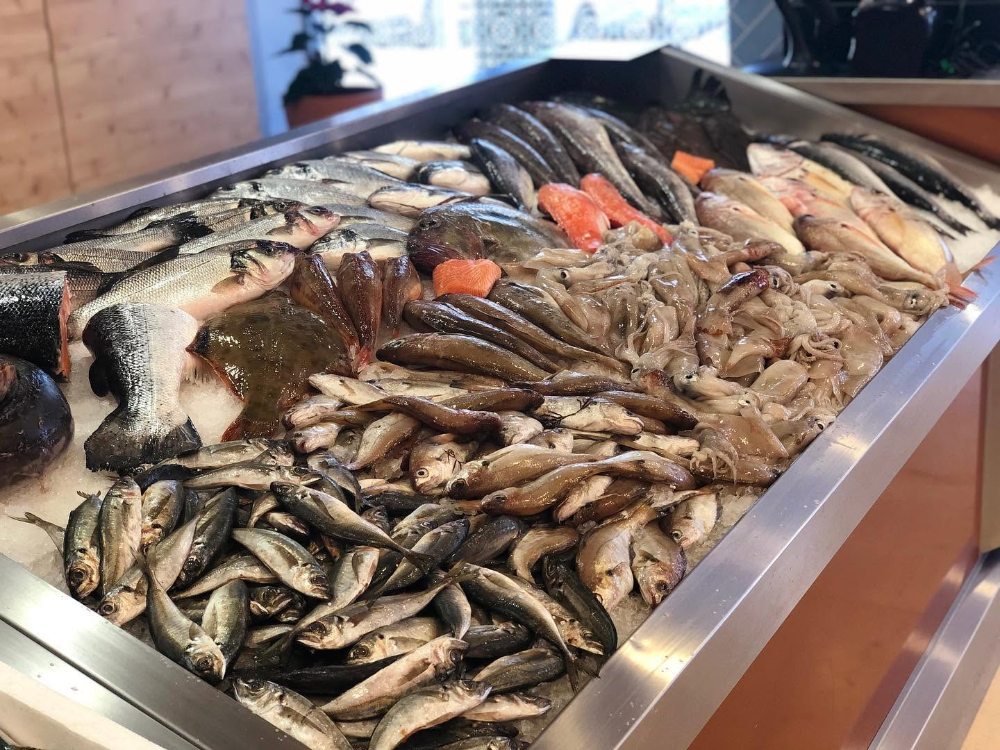
No ano passado, visitei uma pequena oficina de olaria. O artesão fazia pratos e vasos à mão. Eu pensei que as peças eram muito simples, mas depois vi os detalhes e mudei de opinião.
Também conheci uma peça de talha e vi como a madeira ganhava outra vida. Na porcelana, gostei da delicadeza. Quando olhava para a mesa, pensava que estes objetos podiam ficar muito bem numa casa moderna.
Depois, visitei um lugar onde se trabalhava o couro. As pessoas cortavam, tratavam e preparavam a pele para a moda. Eu fiz muitas perguntas porque queria perceber como um material tradicional podia ter um aspeto contemporâneo.
Mais tarde, comprei uma pequena peça de cortiça e provei sardinhas e outros peixes em conserva. Enquanto comia, pensava que Portugal tinha muito para mostrar: materiais naturais, bom design e uma cozinha ligada ao mar.
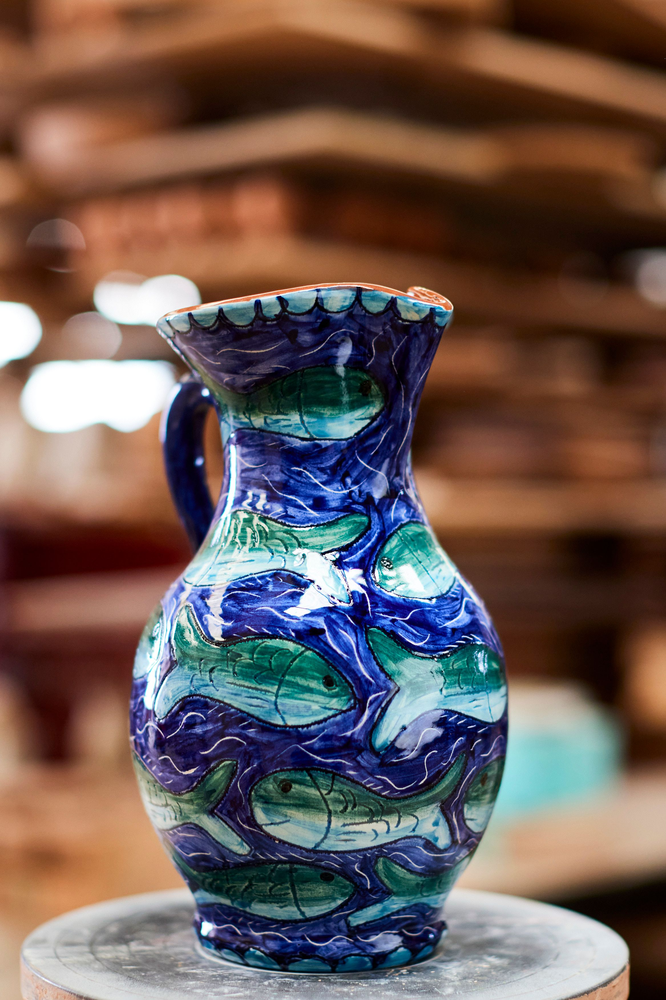
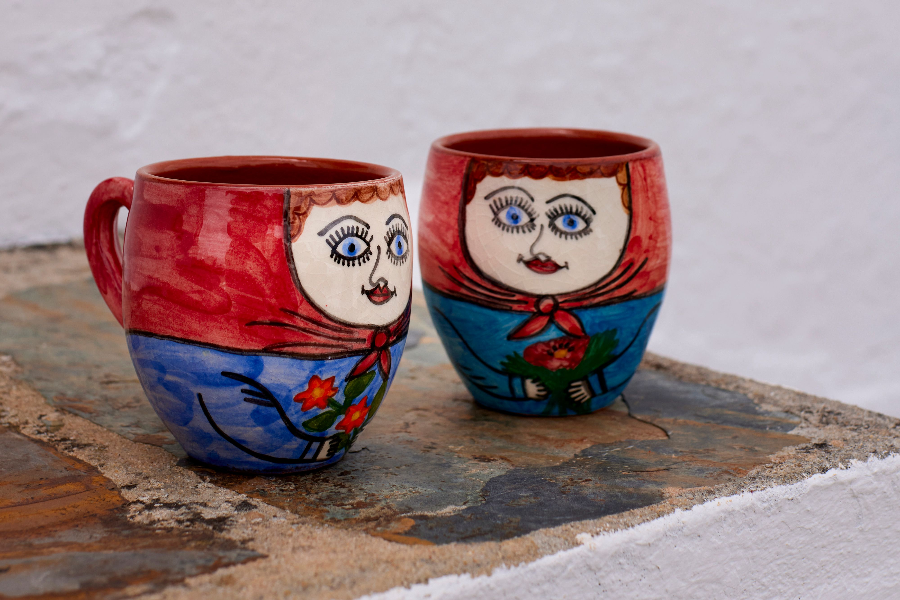
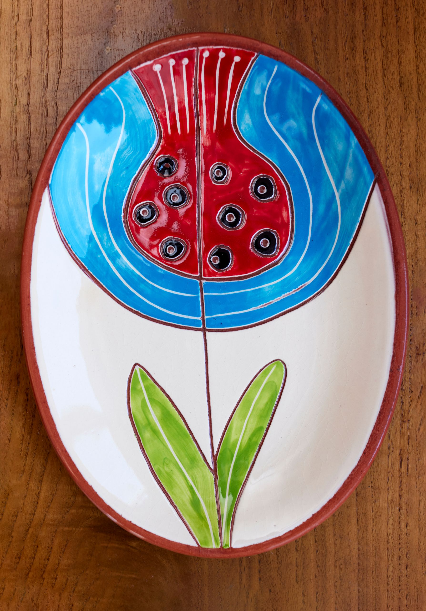

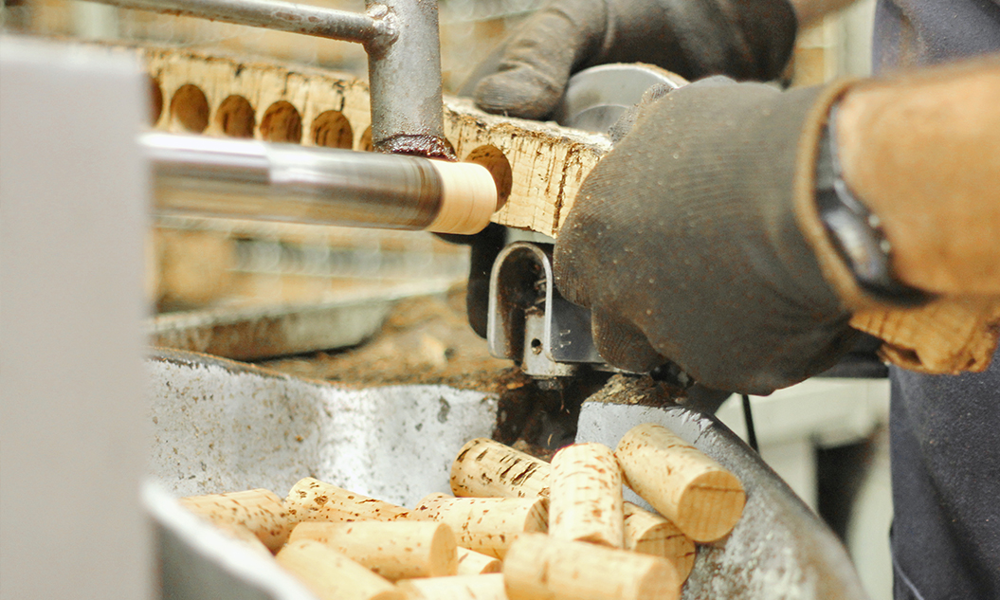
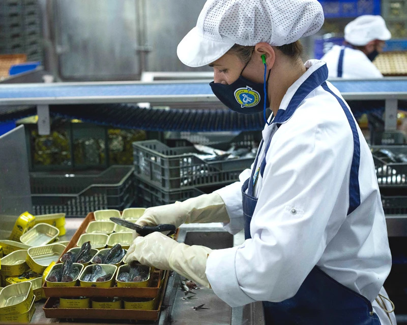
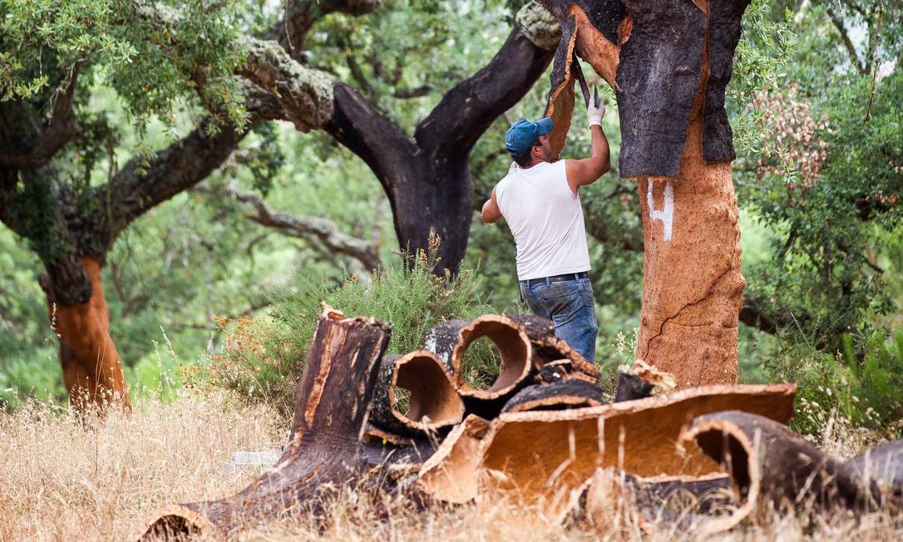
O que aconteceu? O que era habitual?
Complete as frases com o verbo entre parênteses. Pense na diferença entre uma ação concluída e uma situação habitual ou em desenvolvimento.
Palavras em destaque
Portugal à mesa, em casa e no jardim
Imagine que está a escolher alguns produtos portugueses para um projeto pessoal. Fale sobre o que escolheria e explique porquê.
Escolha pessoal
Pode começar assim: “Eu escolhia…”, “Eu gostei de…”, “Quando vi…”, “Eu pensava que…”, “Agora penso que…”.
1. Diga quais são os três produtos que escolheu.
2. Explique qual deles lhe parece mais bonito ou especial.
3. Diga como poderia usar um produto português numa casa, num jardim, na moda ou numa refeição.
4. Conte uma pequena experiência: “Eu vi…”, “Eu fiz…”, “Eu pensei…”, “Eu gostava…”.